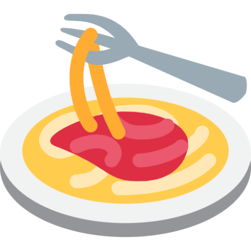
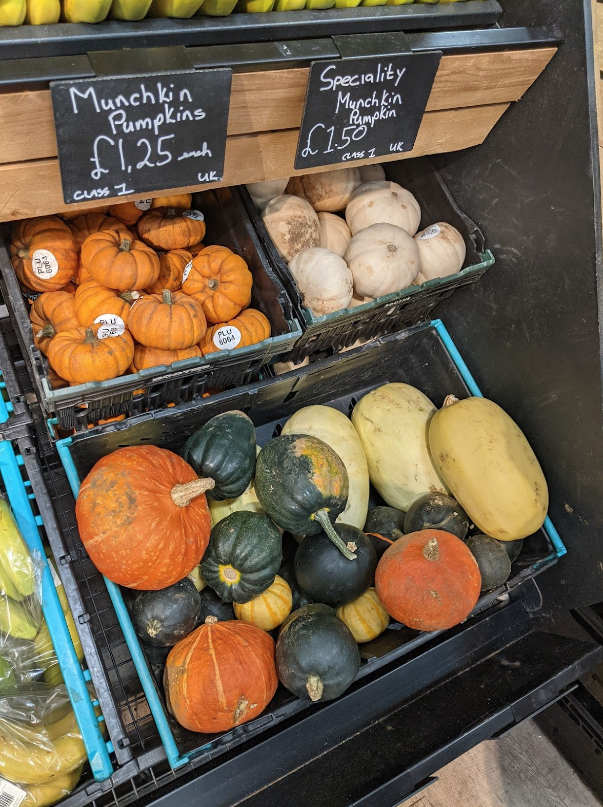

Home
(current)
Soup
Pumpkin soup
Why carve them when you can just eat them?

Ingredients
1.5 - 2kg pumpkin/butternut (net weight)
1 large onion
4 garlic cloves
½ tsp cinnamon
½ tsp nutmeg
½ tsp black pepper and ½ salt
⅛ tsp cloves
1 litre vegetable stock (2 cubes)
200ml coconut milk (you can freeze the other 200ml of a tin)
2 tbsp maple syrup/honey
Half a chopped-up chili (optional)
Chop up and roast the butternut for 30 min in some olive oil.
Fry up onion and garlic, then add in the butternut, spices, and stock.
After about 15 minutes of simmering, blend.
Add coconut milk and syrup just before serving. Can also be fancy and add roasted pumpkin seeds on top or something.
Serves 6.
Inspired by
this recipe.